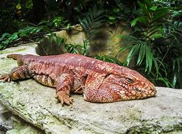

FINAL PROJECT

The Tegu Lizard!
Tegu lizards, often referred to as the mononym “tegus,” are a unique reptile species with a distinct reputation. Despite their large size and somewhat intimidating looks, tegus are one of the most tamable lizards out there. Tegu lizard pets are capable of forming strong bonds with humans, presenting docile behavior that many compare to a dog. LEARN MORE
Tegu lizards, often referred to as the mononym “tegus,” are a unique reptile species with a distinct reputation. Despite their large size and somewhat intimidating looks, tegus are one of the most tamable lizards out there.
Tegu lizard pets are capable of forming strong bonds with humans, presenting docile behavior that many compare to a dog. Some owners even report tegus coming to them after calling their name!
Originally from South America, both wild-caught and captive-bred tegus are available. This species is popular among breeders. Unfortunately, their wide availability has led to issues in some parts of the world.
Tegu lizard pets are capable of forming strong bonds with humans, presenting docile behavior that many compare to a dog. Some owners even report tegus coming to them after calling their name!
Originally from South America, both wild-caught and captive-bred tegus are available. This species is popular among breeders. Unfortunately, their wide availability has led to issues in some parts of the world.
Intelligence and personability aside, providing excellent tegu care does require a bit of effort. Many novice reptile keepers make the mistake of thinking that this species is a walk in the park. While their tamability certainly makes certain aspects of raising a tegu more manageable, these lizards are anything but low-maintenance.
There are several important aspects of tegu care that you need to be familiar with if you want them to thrive. Failing to provide the basics can lead to a bevy of health issues, problems with aggression, and a much shorter lifespan.
There are several important aspects of tegu care that you need to be familiar with if you want them to thrive. Failing to provide the basics can lead to a bevy of health issues, problems with aggression, and a much shorter lifespan.
Tegu lizards are natural omnivores. In the wild, they feed on a plethora of food sources. From insects and fish to seeds and fruit, they eat it all!
A varied diet is vital for this species. You want to provide them with as many vitamins, minerals, and essential nutrients as possible. Sticking to a single food source their entire life would be detrimental to their health.